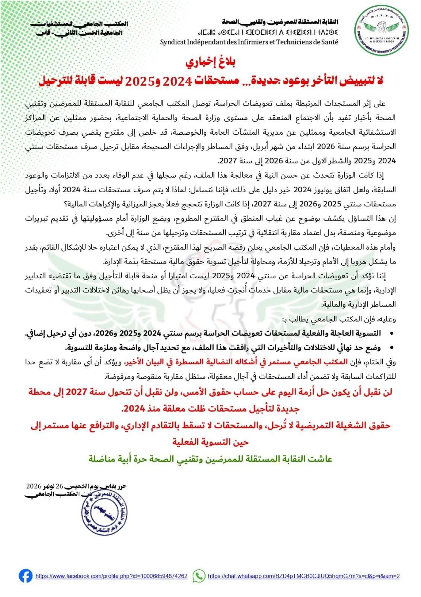

فاس: «لا لتبييض التأخر بوعود جديدة»، المكتب الجامعي يرفض ترحيل مستحقات الحراسة لسنتي 2024 و2025 إلى 2027

أصدر المكتب الجامعي للنقابة المستقلة للممرضين وتقنيي الصحة بالمستشفيات الجامعية الحسن الثاني بفاس، يوم الخميس 26 نونبر 2026، بلاغاً إخبارياً تحت عنوان: «لا لتبييض التأخر بوعود جديدة… مستحقات 2024 و2025 ليست قابلة للترحيل».
وأوضح البلاغ أن المكتب الجامعي توصل بأخبار تفيد بأن الاجتماع المنعقد على مستوى وزارة الصحة والحماية الاجتماعية، بحضور ممثلين عن المراكز الاستشفائية الجامعية وممثلين عن مديرية المنشآت العامة والخوصصة، خلص إلى مقترح يقضي بصرف تعويضات الحراسة برسم سنة 2026 ابتداءً من شهر أبريل، مقابل ترحيل صرف مستحقات سنتي 2024 و2025 والشطر الأول من سنة 2026 إلى سنة 2027.
وتساءل المكتب: إذا كانت الوزارة تتحجج فعلاً بعجز الميزانية والإكراهات المالية، فلماذا لا يتم صرف مستحقات سنة 2024 أولاً، وتأجيل مستحقات سنتي 2025 و2026 إلى سنة 2027؟ معتبراً أن هذا التساؤل يكشف بوضوح غياب المنطق في المقترح المطروح، ويضع الوزارة أمام مسؤوليتها في تقديم تبريرات موضوعية ومنصفة بدل اعتماد مقاربة انتقائية في ترتيب المستحقات وترحيلها من سنة إلى أخرى.
وأعلن المكتب الجامعي رفضه الصريح لهذا المقترح، الذي لا يمكن اعتباره حلاً للإشكال القائم بقدر ما يشكل هروباً إلى الأمام وترحيلاً للأزمة، مؤكداً أن تعويضات الحراسة عن سنتي 2024 و2025 ليست امتيازاً أو منحة قابلة للتأجيل، وإنما مستحقات مالية مقابل خدمات أُنجزت فعلياً.
وطالب المكتب الجامعي بـ: - التسوية العاجلة والفعلية لمستحقات تعويضات الحراسة برسم سنوات 2024 و2025 و2026، دون أي ترحيل إضافي. - وضع حد نهائي للاختلالات والتأخيرات التي رافقت هذا الملف، مع تحديد آجال واضحة وملزمة للتسوية.
وأكد المكتب استمراره في أشكاله النضالية المسطرة في بيانه الأخير، ومنها الوقفتان الاحتجاجيتان أمام إدارة المجموعة الصحية الترابية فاس-مكناس يومي 1 و15 دجنبر 2026.
«لن نقبل أن يكون حل أزمة اليوم على حساب حقوق الأمس، ولن نقبل أن تتحول سنة 2027 إلى محطة جديدة لتأجيل مستحقات ظلت معلقة منذ 2024. حقوق الشغيلة التمريضية لا تُرحَّل، والمستحقات لا تسقط بالتقادم الإداري.»
فتح في تطبيق النقابة